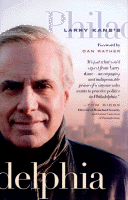

A first-hand look at Philadelphia's important events and people
A first-hand look at Philadelphia's important events and people


 A first-hand look at Philadelphia's important events and people
A first-hand look at Philadelphia's important events and people

|  |
Larry Kane's PhiladelphiaLarry Kane, foreword by Dan Ratherpaper EAN: 978-1-56639-961-6 (ISBN: 1-56639-961-0) |
"It's just what you'd expect from Larry Kane—an engaging and indispensable primer for anyone who wants to practice politics in Philadelphia."
—Tom Ridge, Director of Homeland Security (and former Governor of Pennsylvania)
Larry Kane, dean of Philadelphia news anchors, arrived in town to take a job as a radio broadcaster on September 12, 1966. Driving across the Walt Whitman Bridge he spotted several fires raging to the south. After paying his toll, he drove to a pay phone and called the fire emergency line. The dispatcher responded, "Whateryoutawkin about? Them there's oil refineries."
Thirty-four years later, Larry knows all about the oil refineries. In fact, there's very little that goes on in Philadelphia that he hasn't reported on at one time or another. And it's all here in this easy-reading look at Philadelphia government and politics, and the trials of a journalist trying to cover them.
For Larry Kane watchers, this book answers some nagging questions: Why did he leave for New York and why did he come back? What's the story behind the Bill Green lawsuit? Does he apply his own makeup? Larry is candid about his own mistakes, and about his successes. He talks about his insecurities and the strain of living life in the spotlight.
But this is first and foremost a book about Philadelphia by a man who knows the city intimately. He has been close to more Philadelphia power figures than perhaps any other person. Here he talks personally about Ed Rendell, Arlen Specter, Vince Fumo, Lynne Abraham, John Cardinal Krol, Leon Sullivan, and, of course, the legendary Frank Rizzo. He has visited Jimmy Tayoun in jail, co-hosted a weekend radio marathon with John Lennon, and interviewed shirtless Lenny Dykstra, who insisted that the news team could just clip the microphone to his chest hair.
Larry also has tales to tell about watching Martin Luther King Jr.'s killer being apprehended in Heathrow Airport, about barely escaping the riot at the 1968 Chicago Democratic Convention, about traveling to earthquake-stricken Italy and to dissent-torn Israel. He has even been to Alaska to see the Pope. (Yes, he's also met him more conventionally at the Vatican.)
These are the reminiscences of a master-storyteller, a man whose job has been to see the city accurately and report on it informatively. Whether you're more familiar with Richardson Dilworth or Boyz II Men, you will laugh, groan, and be moved by Larry Kane's view of Philadelphia.
Excerpt available at www.temple.edu/tempress
"Passion, candor and inside stories make Larry Kane's Philadelphia a terrific read. A top-flight journalist has crafted a top-flight memoir, making clear his love for his city and his understanding of its colorful political landscape."
—Marciarose, Philadelphia broadcast pioneer
"...a terrific book that stands with the best firsthand accounts of the city's recent history."
—Main Line Today
"Larry Kane's life story is ultimately a lot like him. Driven, vulnerable, sincere, and infuriatingly likable."
—The Philadelphia Inquirer
"[Kane] not only reveals the news behind the news but also his insider's assessment of our electronic journalism media. By his own description this book is not a history but a journal of important events in this community, witnessed by him from his perspective as a reporter....Whether your ancestors came to Philadelphia with William Penn or on the bus from Wilkes-Barre, Larry Kane's Philadelphia is a good read for lovers of this city."
—Philadelphia Public Record
"This is [Larry's] story. In these pages are the ups and downs of a life well spent in broadcast journalism, gritty tales of city politics, of meetings with popes and presidents, of painful lessons and close calls. It's a story told with candor and suffused with affection for the city he calls home. Here Larry Kane shows you his world and his Philadelphia, and I can't think of a better guide."
—Dan Rather, from the Foreword
"Kane's love affair with Philadelphia resonates throughout his book. All readers, regardless of where they call home, will relish the anecdotes about Philly's praised and notorious leaders and the events that made them legends... The reader of these memoirs will be treated to a real taste—good and bad—of Philadelphia by a man who has become a local institution in his own right."
—ForeWord
Foreword – Dan Rather
Prologue: My Philadelphia, or I Am a Marked Car
1. The Road to the Anchor Chair
2. Success in the Seventies
3. Crisis and Change
4. Politics, Personality, and the Future of TV
Epilogue: Before I Say Good Night
Thanks
Index
Photographs
Larry Kane is news anchor for Eyewitness News at 11 on KYW TV in Philadelphia.
Philadelphia Region
Mass Media and Communications
© 2015 Temple University. All Rights Reserved. This page: http://www.temple.edu/tempress/titles/1528_reg.html.